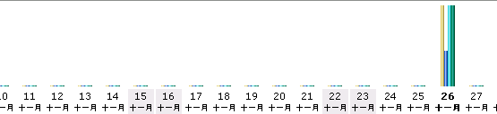

December 26, 2003
请参加”中国年度十佳blog评选“
由weciti推出的“中国年度十佳blog评选”开始了，请前去投我一票，或者为你喜欢的blog投上一票。
我将非常感谢点击“投我一票”的朋友，也非常感谢虽没我但支持weciti的朋友。
深入阅读"请参加”中国年度十佳blog评选“"
November 26, 2003
awstats数据丢失了

因为存放数据的分区满了，我竟没发现！：（
痛哉！
November 07, 2003
November 06, 2003
TrackBack新手指南(编译)
TrackBack ping:在这种情况下，一个ping就是一条从一个web服务器发送到另一个服务器的短消息(a small message)。
“A Beginner's Guide to TrackBack”一文，对在MT中如何使用TrackBack做了详细地说明，下面就是学习笔记。
深入阅读"TrackBack新手指南(编译)"
October 20, 2003
HttpClient学习（四）
关于SSL、多线程处理部分。
深入阅读"HttpClient学习（四）
"
October 14, 2003
MT的XML-RPC API
jedi译的MT手册中，没有这一章，下面MT实现的xml-rpc服务器端的API的学习笔记。
深入阅读"MT的XML-RPC API
"
September 06, 2003
今天又“土”了一把
在另一台机器上将MT时，忘记将NoHTMLEntities 的值设为1，结果汉字在屏幕上全部显示为乱码了。
深入阅读"今天又“土”了一把"
September 01, 2003
修改了“类别”和“按月”归整的模板
虽然增加了一个层次，不利于单个页面的级别计算，但还是犹豫再三，改了。
深入阅读"修改了“类别”和“按月”归整的模板"
August 26, 2003
This is my first Moblog with Mfop2!

This is the body of my first moblog with Mfop2
August 25, 2003
今天才发现对MT的了解太不够了
 一是今天才知道新建文章的页面布局是可以自定义的，二是今天才知道利用MT建立一个fotolog非常简单。
一是今天才知道新建文章的页面布局是可以自定义的，二是今天才知道利用MT建立一个fotolog非常简单。
以前还跟vicent说，MT建立fotolog需要手工处理相片大小呢，糗大了。:(
深入阅读"今天才发现对MT的了解太不够了"
August 16, 2003
利用MT建立了一个Blogroll.
利用MT提供的功能，不用再手工维护自己的相关链接了。
深入阅读"利用MT建立了一个Blogroll."
July 26, 2003
校正了一下时间
先把服务系统时间校正了一下，再校正了一下MT文档的时间。
深入阅读"校正了一下时间"
July 23, 2003
对页面进行了一下修改
解决了“引用”窗口的乱码问题。
将分类移到上面，增加了“最新回应栏”，增加了“列出所有文章”链接。
将主页显示，同一文章的内容紧凑一点。
深入阅读"对页面进行了一下修改"
July 18, 2003
MT完全使用手册
Jedi终于将使用手册写完了，因为有很多图片，所以比单纯用文字描述好多了。
当然，你也可以去我通过代理找到的一个访问不受限的网址去看[原版]。
深入阅读"MT完全使用手册"
June 24, 2003
服务器的日期错了。
突然发现主页上的项目，被归整到24号了，才意识到系统时间可能有问题，一看，果真如此。
深入阅读"服务器的日期错了。"
有意思，再来！
确实过瘾。：）
深入阅读"有意思，再来！"
June 23, 2003
开场锣鼓
抢个第一，找找感觉。：）
前些日子，几个朋友聊起要建立一个BLOG网站。说实话，当时我对BLOG的认识，只是weblog的一种写法，就象“东西”也可以写成“东东”一样。：P
深入阅读"开场锣鼓"